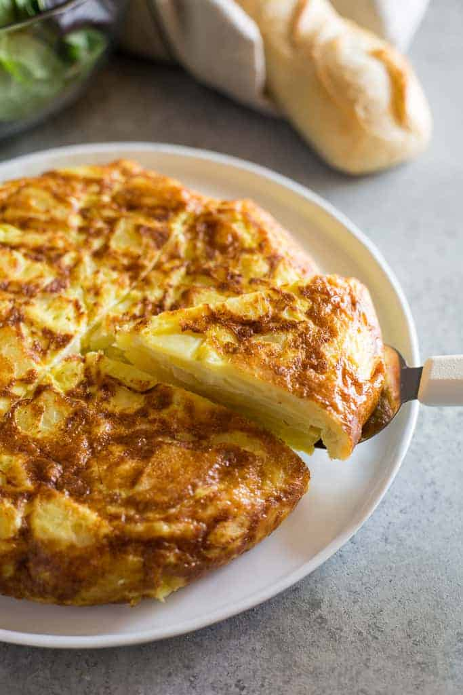

Home
Tortilla de Papas

Description
A Spanish classic made with potatoes, onion, eggs, salt, and oil. Commonly served as a tapa, a main
dish, or even as a snack.
Ingredients
- 2 ½ cups extra virgin olive oil
- 3 medium Yukon Gold Potatoes, peeled and thinly sliced.
- 1 yellow or white onion
- 6 eggs, beaten
- 2 teaspoons crushed sea salt, divided
Steps
- Add olive oil to a large skillet over medium heat.
- Add potato and onion; they should be mostly covered with olive oil (add a little more if needed). Season
with 1 ½ teaspoon sea salt. Cook on medium-high heat, maintaining a gentle boil, for 8-12 minutes,
turning occasionally, until potatoes are just fork tender. Don't overcook.
- Drain potatoes in a colander, reserving oil. Taste and season with more salt, if needed. Allow to cool
for a few minutes.
- Meanwhile crack eggs into a bowl and season with about ½ tsp salt. Beat eggs together. Add potato and
onion and toss to coat.
- Add a little bit of oil to the bottom of a 10-inch non-stick skillet over high heat. Once hot, pour
potato mixture into it and cook on high heat for 1 minute. Reduce heat to medium-low and cook for about
5 minutes.
- Run a rubber spatula along the outer edges of the tortilla to make sure it's not sticking and to help it
form its shape.
- Once it starts to firm up around the edges and in the center, place a large plate over the pan and flip
the omelette onto the plate. At this point, the cooked side of the tortilla should be facing up.
- Now gently slide the omelette back into the pan. Aim the back of the omelette to slide into the back of
the skillet and use the spatula to help slide the rest of it off the plate and into the pan. Then use
the spatula again to press the sides of the omelette in and under, to keep that rounded edge.
- Cook on high heat for 1 minute, and low heat for 2-3 more minutes or until done. It's done when it feels
set in the center and a knife or toothpick inserted into the center comes out clean.
- Flip the finished tortilla back onto a plate, and serve. Serve warm or at room temperature.